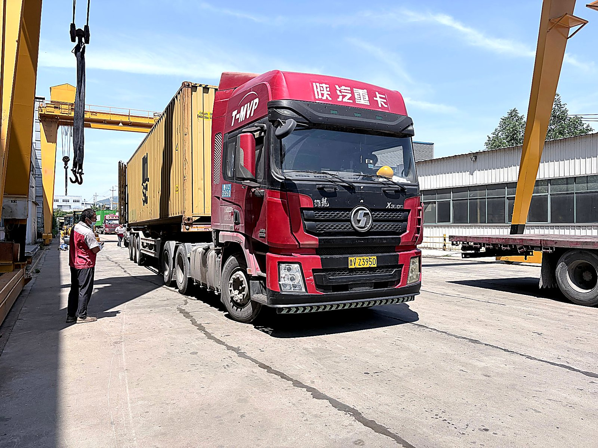

The lineup before shipping. Where each machine is headed changes what we check on it — and Southeast Asia asks for a different list than anywhere else I write about.
Southeast Asia Is Not One Market Either
Just like with South America, buyers write to me asking for "the backhoe loader for Southeast Asia" — as if Manila, Jakarta, Ho Chi Minh City, and Bangkok shared one set of conditions. They do not. The region spans everything from volcanic clay in Indonesia to sandy coastal flats in the Philippines to the hard laterite roads of rural Indochina. Add plantations in Malaysia, port infrastructure projects in Vietnam, and typhoon-season island logistics, and you have ten different machines hiding inside one question.
The first thing I ask is the same as always: where exactly will this machine work, in what ground, in what weather, and doing what job all day? The difference is that in this region, the answers change faster mile by mile than almost anywhere else.
Monsoon and Mud: The Ground Reality
Let me start with the item that decides whether a backhoe loader earns money or sits parked: wet-season ground. For several months of the year across much of the region, everything that is not paved becomes soft — roads, work sites, drainage ditches, plantation tracks. A machine that is fine in the dry season can spend the wet season stuck, sliding, or spinning its wheels at the bottom of a trench it just dug.
- Tires are the first spec line, not an afterthought. Discuss the pattern, the width, and whether a flotation option suits your ground before ordering. My tires guide covers this in detail — the short version is that the right tire for hard dry ground is the wrong tire for monsoon clay.
- A differential lock matters more here than in most markets. When one wheel is sitting in mud, an open diff sends all the torque to the wheel with the least grip. Ask whether it is available, and ask before the machine is built.
- Ground clearance is a daily reality, not a spec-sheet number. Plantation roads, drainage work, and site tracks in the wet season all punish machines that ride low.
- Mud is abrasive. Pins, bushings, and cylinder seals wear faster in mud than in clean conditions — which makes greasing access and seal protection a purchasing decision, not just a maintenance habit.
My rule of thumb from the floor: if the machine will work through the wet season, the traction conversation happens before the price conversation.
Heat and Humidity All Year: Corrosion Is Not Seasonal
In the Middle East, I write about heat and dust. Southeast Asia adds the third element: humidity, and it never takes a season off. Constant moisture in the air is the slowest, most patient enemy a machine has. It does not break anything dramatically. It corrodes connectors, creeps into welds and joints, and turns minor electrical faults into intermittent ghosts that mechanics chase for weeks.
What to specify:
- Sealed and protected electrical connectors and harnesses, routed away from splash zones. In a tropical climate, this is the difference between an electrical system you trust and one you troubleshoot.
- A surface treatment and paint system meant for humidity. Ask about it directly. Crevices at welds and joints are where rust starts — and where it hides from a casual walk-around inspection.
- A cab that closes properly. Rain comes sideways in the tropics. A cab with functional wipers and working HVAC keeps the operator productive through the season when work does not stop for weather.
None of these are exotic requirements. Every serious factory can configure them. The point — as with every market guide I write — is that these items must be in the written spec before the machine is built, not requested after it lands.

Pins, joints, and welds — the places where humidity lives when nobody is looking. This is where a tropical-climate spec earns its money.
What the Machine Actually Does All Day
Spec discussions get abstract fast, so let me ground this in the actual jobs I see machines doing across the region:
- Drainage and canal work. A huge share of municipal and rural work is keeping water moving — digging and clearing drainage before and during the rainy season. This is backhoe loader work by definition: travel between sites, dig, load, move on.
- Plantations and agriculture. Access roads, drainage through planted areas, loading, general hauling support. Palm oil estates in Malaysia and Indonesia run maintenance programs that keep machines busy year-round.
- City utilities and small contractors. Water lines, sewage connections, small building pads — the machine that digs a trench in the morning and loads a truck in the afternoon.
- Rural roads and small infrastructure. Governments across the region are funding connectivity, and much of that work happens on soft ground with limited support nearby.
Notice what is common: the jobs are wet, mobile, and varied. That combination is exactly what a well-specified backhoe loader is for — and exactly what a poorly specified one fails at.
The Advantage Nobody Uses: You Are Closer to the Factory
Here is the part of the Southeast Asia conversation I care about most, because it is the region's structural advantage and most buyers never factor it in.
When I write about Africa, the Middle East, or South America, the supply line is the central problem: parts are weeks away by sea, so the parts kit has to be bought with the machine and stocked hard. Southeast Asia is different. It is the closest of the major backhoe loader markets to Chinese ports. Sea transit is measured in days to a couple of weeks depending on the port pair, not the weeks-on-weeks of the longer routes.
Two consequences follow, and both work in your favor:
- The resupply cycle is shorter. When you need a part that was not in the first kit, it arrives faster than it would almost anywhere else. This does not remove the need for a parts kit — wear items should still ship with the first machine — but it changes the economics of how deep you need to stock the slower-moving items.
- You and the factory work the same hours. The region's time zones overlap with China's working day. When you message me in your afternoon, it is my afternoon too — you are not waiting overnight for every answer. Over the life of a machine, that adds up to faster technical support, faster document fixes, and faster decisions when something goes wrong mid-project.
My honest position: proximity is worth real money, and it shows up on the support side more than the freight side. Do not buy as if you are in a far-away market with the same long parts pipeline as everyone else — but also do not assume proximity replaces the parts kit. It does not. Wear items follow the service schedule, and the schedule does not wait for shipping.
Buying Where Established Brands Are Everywhere
Now the uncomfortable part, because I would rather say it plainly than pretend it away. Southeast Asia is not an empty market. Japanese and Korean brands built their dealer networks in this region decades ago, and some of those networks are excellent. If you walk into a project in a major city and tell me you need a machine with same-day walk-in parts and a service truck on contract, a strong local dealer for an established brand is a reasonable answer.
So where does a machine from a Chinese factory fit? Where it always fits — when the value equation works and the machine is specified properly:
- When you are buying more than one machine. The price difference that is nice on one unit becomes real money on a fleet.
- When you have your own mechanic. A capable workshop on your side changes which support model makes sense.
- When the machine is component-transparent. A machine built from named engine, axle, gearbox, and hydraulic platforms can be supported through regional parts channels, not only through one shipping line. My China manufacturer guide covers how to check this — in a region full of parts channels for recognized components, it matters even more than usual.
- When you verify before you scale. Buy one, run it through a full wet season, then decide on the next five. Any factory confident in its product will encourage this. I do.

Container day — with the wear-parts kit packed alongside. Proximity shortens the supply line; it does not replace the kit.
Language, Time Zones, and Support That Answers
The region works across a dozen languages. English is the default language of export and functions across most business environments, but factories that already ship to the region often have translated materials for operation and maintenance basics. Ask directly what is available in your language before ordering — availability genuinely varies, and the answer tells you something about the factory's experience with your market.
What matters more in daily practice is the response channel. Buyers in this region live on messaging apps, and the time-zone overlap I mentioned means a factory contact who answers during your working afternoon is a realistic expectation, not a lucky break. Test it before you pay: ask a real technical question during the buying process and watch how long the answer takes and how specific it is. The response speed you experience before payment is the best one you will ever see.
Import Realities: Papers, Ports, and Local Help
I will not quote duty numbers for the region in this article, because they vary by country and change over time. Anyone who tells you "the duty is X%" without asking which country first has not done the work.
What is structural and worth knowing:
- Several Southeast Asian countries have trade arrangements with China that can affect duties on machinery — and whether your shipment qualifies depends on the paperwork, especially the certificate of origin. Ask your broker specifically which documents unlock preferential treatment, and make sure the factory arranges them in time.
- Involve a local customs broker early — before the contract, not after the container ships. Have them break down the full landed cost: machine, freight, duties, clearance, inland transport.
- The document set follows the machine regardless of distance: commercial invoice, packing list, bill of lading, certificate of origin. My import guide covers the documentation side in detail.
- Agree the spec sheet in the contract — same as anywhere, but with the wet-season items written down: tires, differential lock, electrical sealing, surface treatment.
A Southeast Asia Spec Checklist
If you take one thing from this article, take this list. Bring it to any supplier, including me:
- Wet-season ground conditions, in writing — and tire pattern, width, and flotation options matched to them.
- Differential lock — available, specified, in the contract.
- Corrosion package — sealed electrical connectors, humidity-rated surface treatment and paint, protected welds and joints.
- A cab that works in rain — functional wipers, working HVAC, doors that seal.
- Greasing access — because pins and bushings wear fastest in mud, and machines that are easy to grease get greased.
- Named components — engine, axles, gearbox, hydraulic pump and valves, all by brand and model.
- First-year spare parts kit quoted with the machine — filters, seals, pins and bushings, hoses, bucket teeth.
- Documentation language and a named technical contact who answers on your channel, in your afternoon.
- Inspection before shipment — third-party or video, tied to the payment milestone. The inspection checklist on this site is the list I would use.
Vivian's Bottom Line
Southeast Asia is the paradox market: the conditions are the wettest and most corrosive I write about, and the supply line is the shortest. A buyer who respects both facts does very well here — specify for mud and humidity, buy the parts kit anyway, use the proximity and time-zone overlap to demand responsive support, and verify the first machine through a full wet season before scaling the fleet.
I sit in the factory every day, and the machines heading to your region get a different checklist than the ones heading anywhere else. If you tell me your country, your ground, and what the machine will actually do all day, I will tell you what matters in the spec and what does not — and I will be straight with you about whether a dealer machine down the road is the better answer for your project.
Working in Southeast Asia?
Tell me your country, your ground conditions, and the jobs the machine will do all day — I will configure the machine and the parts kit around them, and be honest about anything that does not fit. No pressure, just a factory-floor read on your project.
Request a Quote for My Project